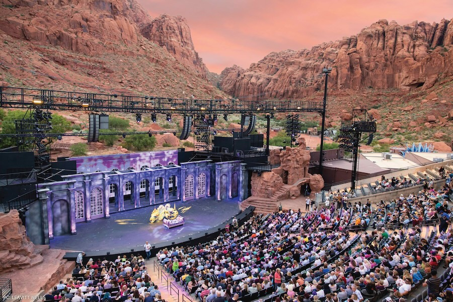
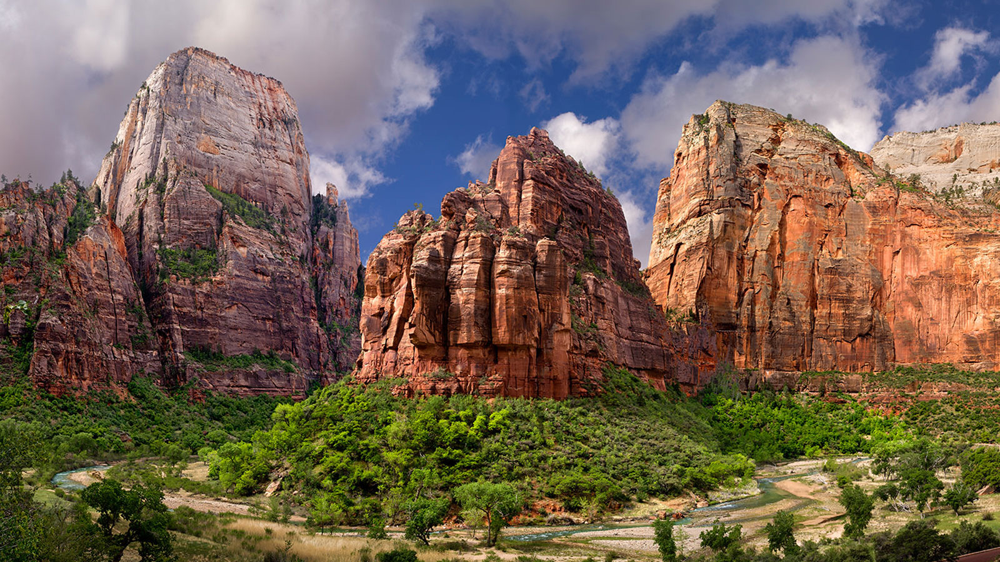
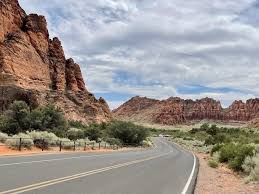
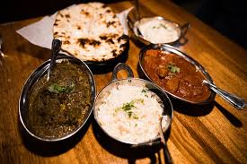

As a musical theatre lover, Tuacahn is my favorite place to visit in Southern Utah. Though not in Saint George, it is in the town right next to it and brings a lot of traffic to Saint George. At Tuacahn they produe the most magical musical experiences you will see. Incredible set design, beautiful orchestral music (performed live each show), and professional actors (some of which come from broadway productions)! If you are in town during the show season, Tuacahn is a must even if you aren't a nerd like myself.

Zion National Park is a beautiful place to visit for anyone that loves nature. This gorgeous park has incredible sandstone structures where you can camp, hike, tour, or just relax. There is a huge range of wildlife in Zion National Park. Lets highlight some of my favorites!
Those animals are selected from a large list of animals. There are also so many fish, amphibians, and insects to list. Zion is full of beautiful wildlife and one must visit at least once in their life!

Snow Canyon State Park is another beautiful nature park in Southern Utah. Snow Canyon is actually not in Saint George, but it gets a lot of traction because it's so close by. There are beautiful sand dunes, red Navajo sandstone, and lava rocks. Explore these beautiful trails, campsites, and different programs. If you are looking to just relax and go exploring with some friends, this is the perfect place.

Red Fort is an authentic Idian cuisine that we have here in Saint George, Utah. Rich flavors you've never tasted before, fresh ingredients prepared by experts, each bite is an experience. So many options to choose from, and all are amazing.
| Attraction | Category | Cost | Best For |
|---|---|---|---|
| Tuacahn Amphitheatre | Musical Theater/Arts | $19.00-$144.00 | Musical theater lovers |
| Zion National Park | Outdoors/Nature | Standard Pass $20.00-$35.00 (Non-US residents +$100.00) Annual Pass $70.00 (US citizens and residents only.) | Hikers/Nature lovers |
| Snow Canyon State Park | Outdoors/Nature | $3.00-$20.00 | Hikers/Nature lovers |
| Red Fort Cuisine | Food | $16.00-$30.00 | Foodies/Anyone who wants to try something different |